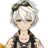
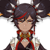

Pyro
Amber
Amber is a straightforward girl, perky, who is also the only Outrider of the Knights of Favonius. She's a rising star in the city of Mondstadt and is ready for all challenging tasks, come what may.


Bennett
An orphan discovered by an elderly adventurer as a baby, Bennett was raised in Mondstadt's Adventurers' Guild. He is the one and only member of "Benny's Adventure Team," as everyone else left the team after experiencing the constant misfortune that follows him.
Diluc
Born into the affluent Ragnvindr Clan, Diluc is the current owner of the Dawn Winery and a nobleman of high esteem in Mondstadt society. While a past incident caused him to split ways with the Knights of Favonius, he continues to protect Mondstadt in his own way.

HuTao
Hu Tao is the 77th Director of the Wangsheng Funeral Parlor, though she once took over the business at a rather young age. Hu Tao is most likely to be also known as a prankster in Liyue.
Klee
The daughter of the intrepid and often quite destructive adventurer Alice, Klee takes after her mother in many ways, much to the dismay of the Knights of Favonius whom she has been entrusted to.
Xiangling
She is the Head Chef at the Wanmin Restaurant and runs it alongside her father Chef Mao. As a chef, Xiangling isn't afraid to try out different recipes or "exotic" ingredients... making her dishes sometimes quite unique.

Xinyan
Rock 'n' roll is a relatively unpopular style of music in Liyue, having recently been brought over from Fontaine. Xinyan, however, loves the sound — and she's slowly but surely amassing a fanbase of her own as she performs throughout Liyue Harbor.
Yanfei
She is the child of an adeptus father and human mother. After she grew up, her parents left to go on an adventure, placing her in the care of Madame Ping. She resides in Liyue, serving as a legal advisor for its people.
Yoimiya
She is the daughter of Naganohara Ryuunosuke and the current owner of Naganohara Fireworks. With her colorful fireworks and outgoing personality, Yoimiya is beloved by everyone on Narukami Island, who believe summer is not the same without her.